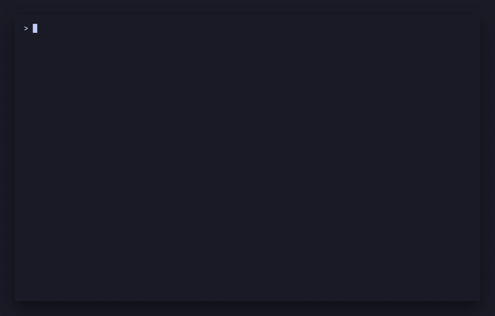
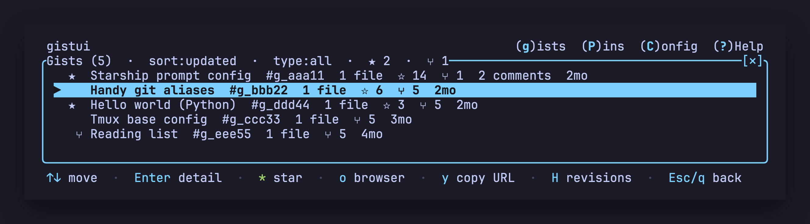
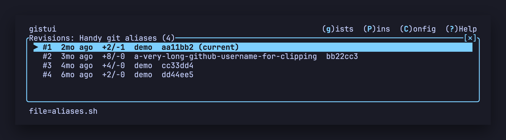

Your GitHub Gists, next to the files in your working directory. Diff the two and push or pull with one key. Runs on the GitHub CLI, so it stores no token of its own.
$ curl -fsSL https://raw.githubusercontent.com/akunzai/gistui/main/install.sh | bash detects your platform, verifies the SHA-256, installs to ~/.local/bin $ cd ~/dotfiles && gistui
Linux, macOS, and Windows. Homebrew, Scoop, PowerShell, crates.io, mise, and building from source · Source on GitHub · Latest release

gh gistThe official CLI is non-interactive and text-only. gistui shows both lists at once and ranks your gists against the file you are on, so finding the right one is not a copy-paste of an id.
The browser cannot see the file you are editing. gistui launches in a directory and works against what is actually on disk there.
No existing file — local or remote — is overwritten without its diff and a y/n first. Destructive remote actions confirm one at a time.
Also: ; or right-click for a menu of what is valid right now, Ctrl+p for the command palette. The mouse works by default.


gh and run gh auth login once. gistui shells out to it at runtime and keeps no credentials of its own.pbcopy, clip, wl-copy, xclip, or xsel. Without one, copy reports that instead of failing.